Tendenza - albero di Natale manichino
Si sa che ormai noi donne vogliamo mettere un tocco glamour in ogni cosa che tocchiamo e la nuova tendenza del 2015 è stata realizzata soprattutto dai più grandi stilisti. .
Adottata molto dai negozianti principalmente per addobbare le vetrine in modo originale e sempre fashion, questa nuova tendenza ha fatto davvero scalpore tra le amanti della fantasia. .
Ovviamente non sono mancati questi bellissimi alberi di vestiti anche in tantissime case. .
Vi posto una carrellata di foto:
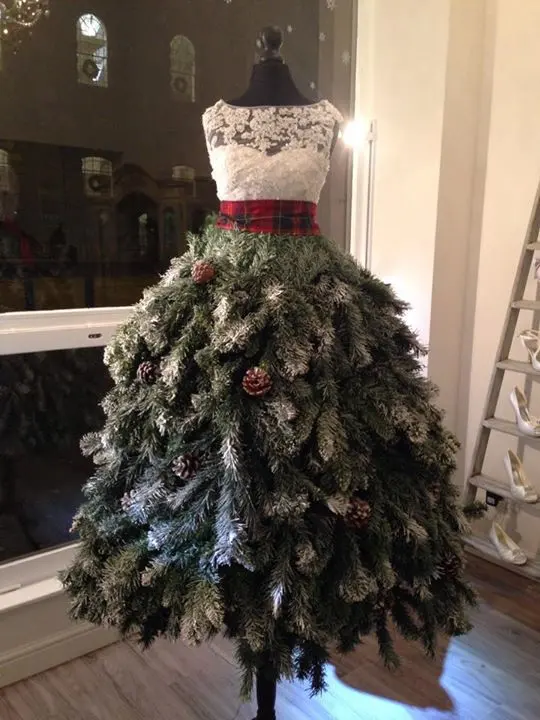
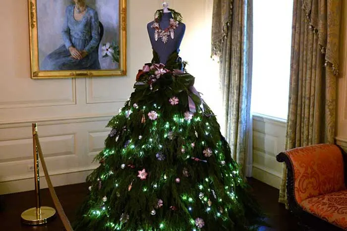
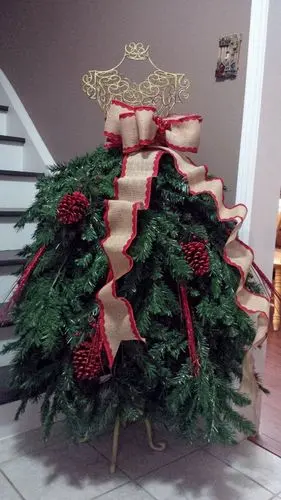

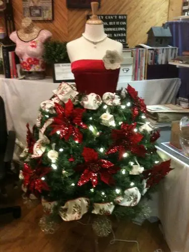
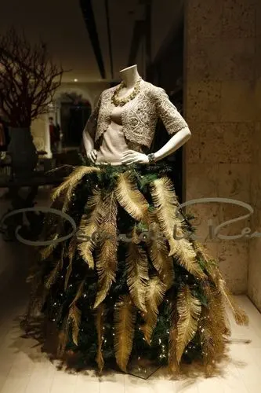
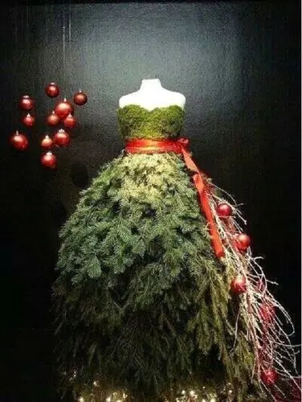
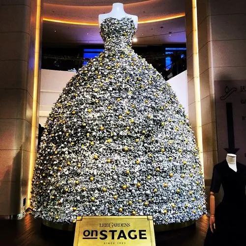
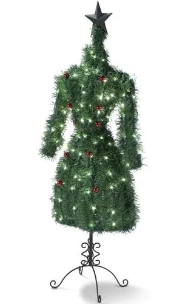
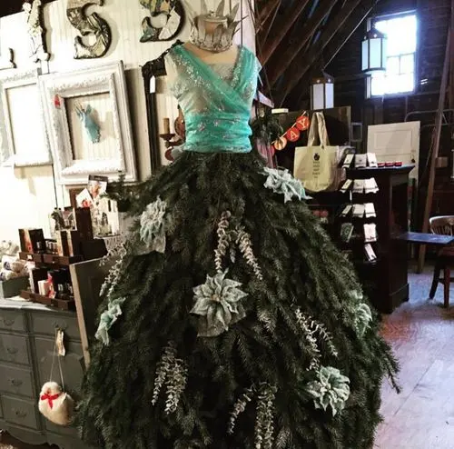
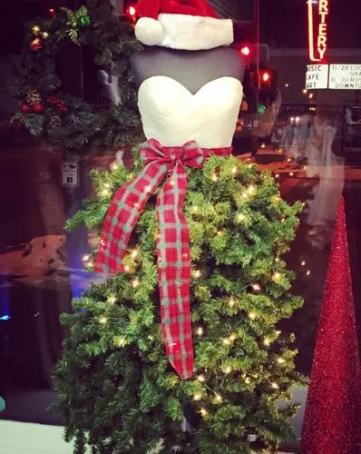
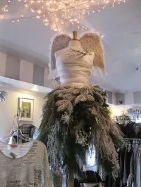
Di sicuro non sono alberi di Natale usuali e di scarso valore, poiché per addobbare un manichino è davvero come se comprassimo un vero vestito ihihih
D'effetto senza ombra di dubbio e, come me che ama l'originalità non è un'idea da scartare. .
VOi l'avete già fatto l'alberi di Natale o aspettate l'8 dicembre come da tradizione?
Vi diletterete anche voi in una scorta di stilista natalizia o opterete per il tradizionale albero di Natale?